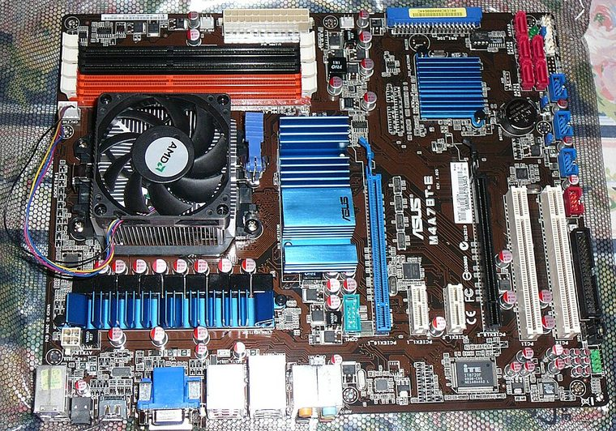
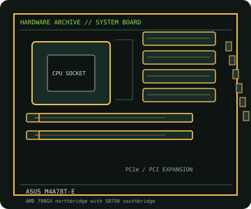

[ INDIVIDUAL COMPONENT // MOTHERBOARDS ]
ASUS M4A78T-E
Socket AM3 board pairing AMD 790GX integrated graphics with SB750, DDR3 memory and legacy PCI expansion. CPU support is model- and BIOS-qualified.


IDENTIFICATION: Confirm the full model name, printed PCB revision and firmware identifier on the physical board. Variants with similar names may differ in CPU support, BIOS, memory and connectors.
Specifications
| Catalog subcategory | AMD Socket platforms |
|---|---|
| Exact board / model | ASUS M4A78T-E |
| Era / platform | Socket AM3 / AMD 790GX + SB750, 2009 |
| CPU and socket | Socket AM3 AMD Phenom II, Athlon II and Sempron processors appearing on the ASUS CPU table; verify the minimum BIOS for the exact SKU. |
| Chipset / controller | AMD 790GX northbridge with SB750 southbridge; integrated Radeon HD 3300 graphics. |
| Memory | Four DDR3 DIMM slots, dual-channel, up to 16 GB; supported speed depends on processor, DIMM population and BIOS. |
| Form factor | ATX |
| Expansion and storage | Two PCIe 2.0 x16-length slots with CrossFire lane sharing, two PCIe x1 and three PCI slots; six SATA 3 Gb/s ports plus PATA. |
| Firmware compatibility | Use the exact model and board revision support page. Check CPU support and minimum BIOS before fitting a processor; do not flash firmware intended for a similarly named board. |
Compatibility and revision notes
This is the DDR3 M4A78T-E, not similarly named DDR2 M4A78-family boards. The ASUS CPU table lists model-specific minimum BIOS versions; do not infer CPU support from the AM3 socket alone.
Before installation, check the manufacturer’s model-specific CPU support table and manual. Verify the power supply, cooler, chassis clearance, memory population rules and any shared PCIe or SATA lanes for the intended configuration.
Preservation and repair
Inspect the AM3 socket and integrated-graphics heatsink, and retain a known-good BIOS image. Follow ASUS DIMM population order and verify the selected CPU in the model-specific CPU table.
For an archive record, photograph PCB labels before cleaning and note serial/date codes, firmware, accessories, known faults, repairs and test conditions. Use ESD-safe handling; do not energize a board with loose conductive hardware beneath it.
Sources & further reading
- ASUS M4A78T-E manuals and board documentationManufacturer manuals and board identification references.
- ASUS M4A78T-E CPU support listExact processor models and minimum BIOS versions; check against the installed BIOS.
Primary manufacturer documentation is the compatibility authority. Match the cited support table and manual to the exact model and PCB revision; do not transfer firmware or CPU claims between near-name variants.